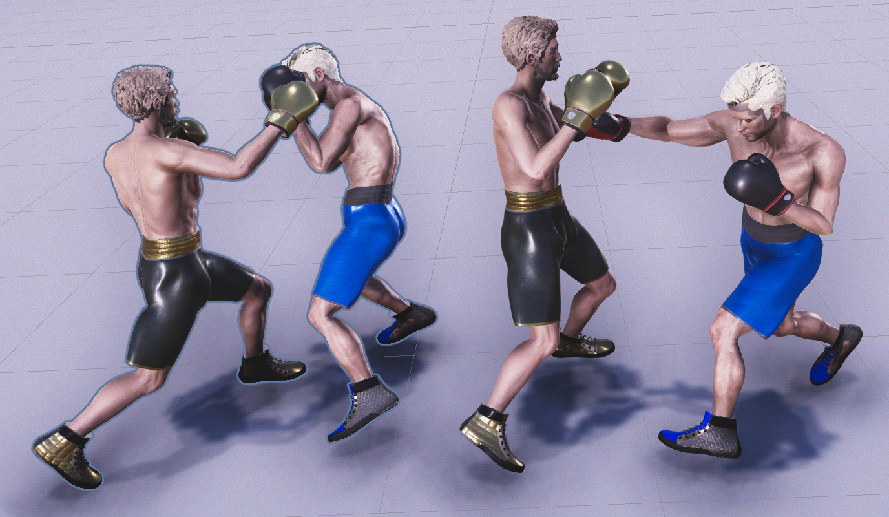
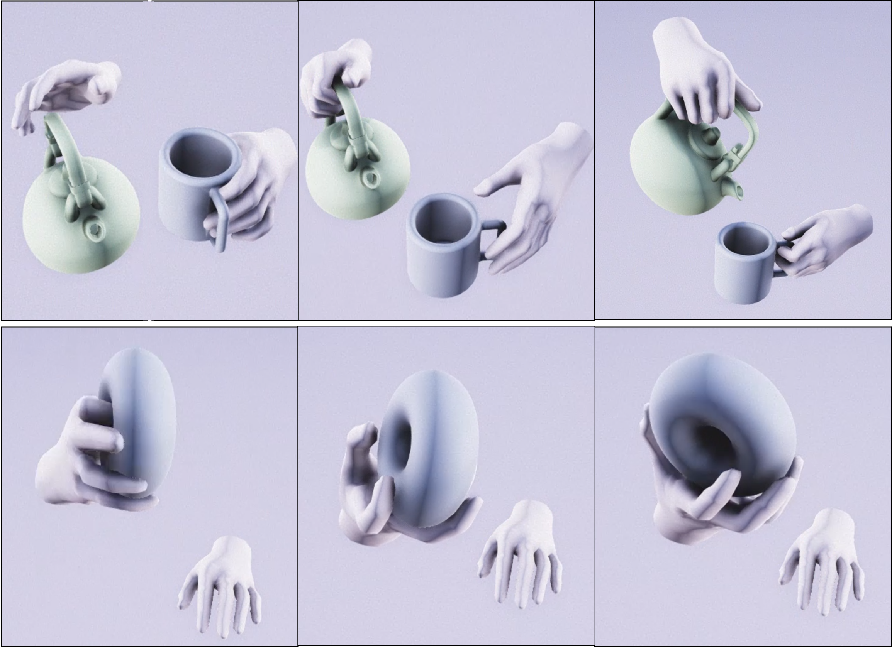
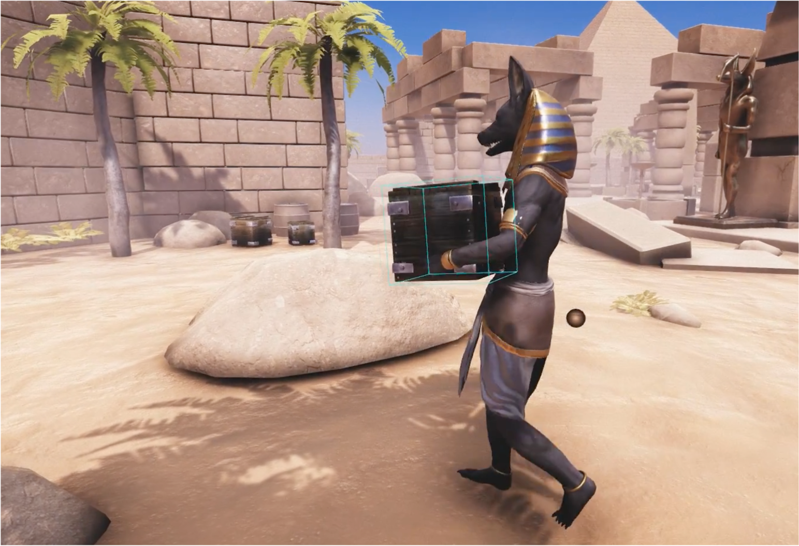
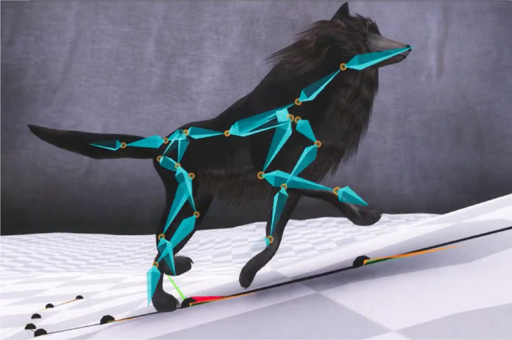
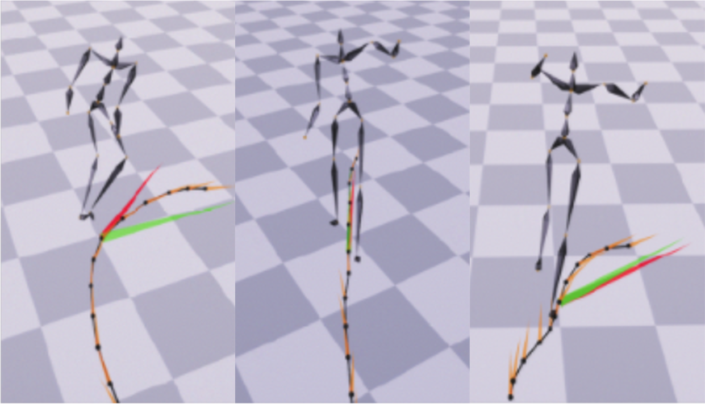
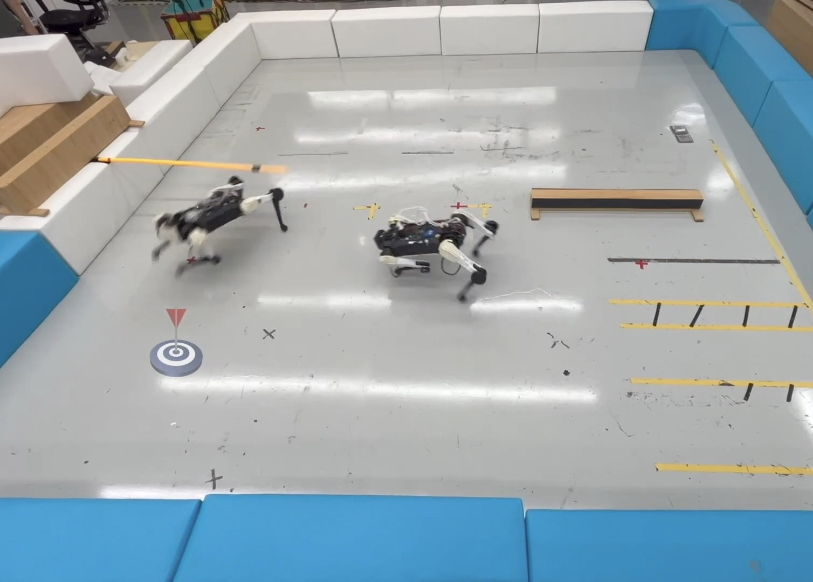

He Zhang 张贺
Gmail: he.zhang.cs AT gmail.com
Tencent Email: herbzhang AT tencent.com
Previous Email:
I am a senior researcher at Tencent RoboticsX Lab (Agent Learning Center).
My current work focuses on motion control of the simulated character and dexterous manipulation with physics-based, data-driven, and learning-based techniques.
I received Ph.D from the University of Edinburgh in Computer Science in 2022, advised by Prof.Taku Komura.
Check out my Google Scholar, Linkedin, GitHub, or CV.
Publications:

Neural Categorical Priors for Physics-Based Character Control

ManipNet: Neural Manipulation Synthesis with a Hand-Object Spatial Representation

Neural State Machine for Character-Scene Interactions

Mode-Adaptive Neural Networks for Quadruped Motion Control

Few-shot Learning of Homogeneous Human Locomotion Styles
Projects:

Lifelike Agility and Play on Quadrupedal Robots using Reinforcement Learning and Generative Pre-trained Models
Experience:
-
Oct, 2021-May, 2022:
Research Associate, University of Hong Kong -
Sep, 2019-Jan, 2020:
Research Intern, Facebook Reality Lab -
Jan, 2019-May, 2019:
Research Intern, Adobe Creative Intelligence Lab -
May, 2018-Aug, 2018:
MSc Project Teaching Assistant, University of Edinburgh
Education:
-
Sep. 2017 - April. 2022:
Ph.D in Computer Science, University of Edinburgh
Supervisor: Prof. Taku Komura - Sep. 2016 - Aug. 2017:
M.Sc in Data Science, University of Edinburgh
Supervisor: Prof. Taku Komura - Sep. 2012 – Aug. 2016:
B.E. in Computer Science and Technology, Shandong University